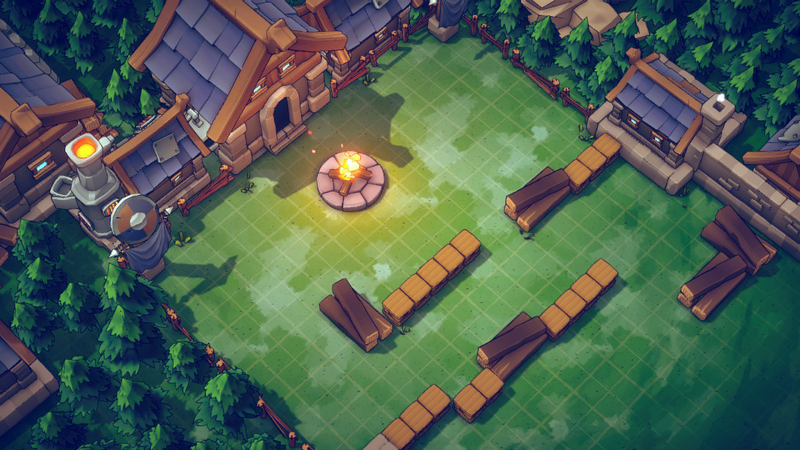
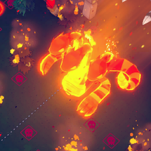

Vòng lặp chính (Run)
Emberward là tower defense + roguelite: mỗi run người chơi chọn nhân vật + loại lửa (Ember), đi qua bản đồ node của một world (8–13 bước), ở mỗi màn chiến đấu đặt khối Tetris dựng mê cung và xây tháp trên khối để bảo vệ Nguồn lửa (Fire Source, 10 HP) trước 5–1
Mô tả
- Emberward là tower defense + roguelite: mỗi run người chơi chọn nhân vật + loại lửa (Ember), đi qua bản đồ node của một world (8–13 bước), ở mỗi màn chiến đấu đặt khối Tetris dựng mê cung và xây tháp trên khối để bảo vệ Nguồn lửa (Fire Source, 10 HP) trước 5–10 wave quái, rồi nhận thưởng (tháp/khối/relic/Ember Stone/EXP) và đi tiếp tới boss world. Thua khi HP nguồn lửa về 0. Ngoài run có talent (EXP), 5 world, 4 độ khó, Inferno Shard, Endless/event/Enigma Sanctum.
- 1) Title → chọn slot save (3 slot) → chọn nhân vật + Ember → chọn world/độ khó/Inferno Shard → GameDataManager.StartNewGame(seed, world, difficulty) tạo GameplayData (HP 10, gem 0, itemCardLimit 10, towerCardLimit 8, drawCardPerRound 3). 2) MapScene: Map.GenerateMapData sinh bản đồ theo MapGenerateSetting (Step 8 ở W1, 9 ở W2–W4, 13 ở W5; 2–4 node/bước). Bước 0 luôn là Academy (chọn bộ khởi đầu: 3 tháp + 7 thẻ khối + 1 relic). 3) Mỗi node battle: MainGame load EnvScene (EnvSceneCollectionData) + StageSettingData (wave), IngameData khởi tạo với coin = 50 (+talent Initial Advantage, +lãi Merchant), HP = curHP, armor 3 nếu Knight. Vòng 1 không giới hạn thời gian chuẩn bị (ROUND_PREPARE_TIME 180 s nhưng 'Prepare for 1st wave' chờ người chơi bấm), các vòng sau 15 s (60 s vòng 1 với Chrono Traveler; +30 s talent Superior Efficiency; ×0.5 với relic Time-Saving Device). 4) Battle: StageDataReader.StartNextWave spawn quái theo MonsterSpawnData; tháp bắn; quái chạm nguồn lửa gây damage. 5) Hết wave: thưởng vàng roundClearReward[round] (30,40,50,60,65,70,75,80,85,90,95,100…); rút 3 thẻ đầu vòng. 6) Hết stage: OnPlayerVictory → thưởng StageRewardData (EXP=(step/2)*6+20, Gem=(step+1)*5, thẻ tháp, khối, relic ở màn corrupted/anomaly/darkness/mid-boss, Gambler's Token) → UI_Victory_Popup → về MapScene. 7) Boss node (bước cuối) → thắng = clear world, mở world kế; thua = UI_Defeat_Popup, ghi RunRecord, về title.
Sơ đồ
Hình minh hoạ



Lưu ý
Mở khóa & điểm vào
Có sẵn từ đầu (world 1 Misty Forest, Casual/Normal). Heroic mở sau khi hạ boss Normal (PlayerLifetimeData.isDefeatedNormalModeBoss, UI_DifficultySelection_Popup.OnClickButton_Heroic). Màn tutorial (StageScript_Tutorial, EnvScene_000) chạy trước run đầu tiên (isTutorialStageFinished).
Điểm vào:
- CoinPage (title): START GAME / CONTINUE / TALENTS / OPTIONS
- UI_SelectCharacterPopup → UI_DifficultySelection_Popup → MapScene
- MapScene: click node (MapNode.OnButtonClick) → MainGame scene
- CoinPage.CR_StartEndlessMode / CR_StartQuickPlay (Endless, Custom, Event)
Cách hoạt động
- Bắt đầu run mới: UI_SelectSaveSlot_Popup (3 slot, SAVE_SLOT_COUNT=3) → UI_SelectCharacterPopup: chọn eCharacterType + eEmberType đã mở → UI_DifficultySelection_Popup: Casual/Normal/Heroic (+Inferno Shard nếu đã mở) → GameDataManager.StartNewGame(seed, worldType, difficulty) → GameplayData mới, GameplayData.SetGameStarted (Quy tắc: randomSeed = Random(0..99999999) nếu -1; MAX_DRAW_CARD_PER_ROUND=10, MAX_TOWER_CARD_LIM
- Vào một node chiến đấu: MapSceneProcess.OnClickMapNodeButton → CR_BattleNodeProc → MapNodeData.SetEnvSceneName(EnvSceneCollectionData.GetRandomScene(world, stageLevel)) — cấp độ scene 1–3 tăng theo bước → IntermediateData: worldType, missionType=STAY_ALIVE_ROUND, stageType, isCorrupted/isAnomaly, stageData → Load MainGame; MainGame.Awake đọc sceneEntry (fallback EnvScene_012) (Quy tắc: coin = 50 + TalentParam(INITIAL
- Vòng chuẩn bị và bắt đầu battle: MainGame.CR_GameLoop: OnRoundStart(round, totalRound) → CR_DrawCardAtRoundStart: rút drawCardPerRound (3) thẻ (+2 khối với Scholar, +talent Skilled Engineer 1/2) → Vòng 1: không đếm ngược (PREPARE_FIRST_ROUND); vòng ≥2: roundCountdown = GetRoundFullPrepareTime() → Người chơi đặt khối (TETRIS_BUILD_MODE), xây tháp (TOWER_BUILD_MODE), dùng buff card (BUFF_MODE), bấm START_BATTLE hoặc hế
- Kết thúc wave: thưởng vàng: Vàng thưởng = roundClearReward[round+1]; nếu vượt mảng: phần tử cuối + (round − 20 + 1)×10 → Inferno Shard Gold L2: −30 % → Merchant: coinsSavedForNextLevel = min(150, saved + 10 % coin hiện có) (OnCoinChanged 0x4a) → Perk/relic round-end (Wealth Vault 10 % lãi ≤100, Gold Furnace, ENDLESS_FOR_ROUND_END perk…) (Quy tắc: roundClearReward = [15,30,40,50,60,65,70,75,80,85,90,95,100×8] (static
- Thắng stage: GameplayData.RecordMapNodeCleared(stageType); PlayerRecord.AddClearedLevels → StageRewardData của node: Exp, Gem, dic_RewardEntries (TETRIS/TOWER/RELIC/MINI_SHOP/QUEST/REROLL_CHANCE/MINI_WORKSHOP) → UI_Victory_Popup phần 1 (stats) → phần 2 chọn thưởng: UI_ChooseRewardCardPopup (tháp 3 lựa chọn, relic 3 lựa chọn +talent Relic Hunter 1/2) → Talent Loot Scavenging: +1/3/5 Ember Stone mỗi 50 vàng dư; Flame R
- Thua run: GameplayData.SetGameEnded(doRecord) → PlayerRecord.AddGamesLost, ResetWinStreak → RunRecord.AddRunRecord(false) lưu nhân vật/ember/world/độ khó/shard/damage/tháp/relic → UI_Defeat_Popup: thống kê, EXP kiếm được trong run vẫn giữ (PlayerLifetimeData.exp) → Về CoinPage; slot save xoá gameplayData đang dở (haveSaveData=false cho run) (Quy tắc: Custom Game: không ghi record, không achievement, không EXP)
- Continue run đang dở: CoinPage.UpdateContinueInfo: hiện Character, EmberType, world, INFERNO_SHARD_LEVEL, SELECT_DIFFICULTY_{0} → CR_StartGame(isNewGame=false) → load MapScene với mapData đã lưu (Quy tắc: Save chỉ ở MapScene và các mốc SaveData(); thoát giữa battle = mất stage đó)
Luồng chi tiết theo code
1) Title → chọn slot save (3 slot) → chọn nhân vật + Ember → chọn world/độ khó/Inferno Shard → GameDataManager.StartNewGame(seed, world, difficulty) tạo GameplayData (HP 10, gem 0, itemCardLimit 10, towerCardLimit 8, drawCardPerRound 3). 2) MapScene: Map.GenerateMapData sinh bản đồ theo MapGenerateSetting (Step 8 ở W1, 9 ở W2–W4, 13 ở W5; 2–4 node/bước). Bước 0 luôn là Academy (chọn bộ khởi đầu: 3 tháp + 7 thẻ khối + 1 relic). 3) Mỗi node battle: MainGame load EnvScene (EnvSceneCollectionData) + StageSettingData (wave), IngameData khởi tạo với coin = 50 (+talent Initial Advantage, +lãi Merchant), HP = curHP, armor 3 nếu Knight. Vòng 1 không giới hạn thời gian chuẩn bị (ROUND_PREPARE_TIME 180 s nhưng 'Prepare for 1st wave' chờ người chơi bấm), các vòng sau 15 s (60 s vòng 1 với Chrono Traveler; +30 s talent Superior Efficiency; ×0.5 với relic Time-Saving Device). 4) Battle: StageDataReader.StartNextWave spawn quái theo MonsterSpawnData; tháp bắn; quái chạm nguồn lửa gây damage. 5) Hết wave: thưởng vàng roundClearReward[round] (30,40,50,60,65,70,75,80,85,90,95,100…); rút 3 thẻ đầu vòng. 6) Hết stage: OnPlayerVictory → thưởng StageRewardData (EXP=(step/2)*6+20, Gem=(step+1)*5, thẻ tháp, khối, relic ở màn corrupted/anomaly/darkness/mid-boss, Gambler's Token) → UI_Victory_Popup → về MapScene. 7) Boss node (bước cuối) → thắng = clear world, mở world kế; thua = UI_Defeat_Popup, ghi RunRecord, về title.
Phần thưởng
Thưởng
| Ngữ cảnh | Thưởng | Bằng chứng |
|---|---|---|
| Clear node battle bước s | EXP (s/2)*6+20, Ember Stone (s+1)*5, 1 thẻ tháp (chọn 1/3), 1 thẻ khối, Gambler's Token ×1 (×2 nếu s>3) | Map.RollStageReward |
| Clear node corrupted / anomaly / darkness / mid-boss | Thêm 1 relic (chọn 1/3, +1/2 talent Relic Hunter) | Map.RollStageReward (stageType 12/15/16/20) |
| Node ngay trước boss | Mini Shop hoặc Mini Workshop (luân phiên lastPreBossMiniRewardType) | Map.RollStageReward |
| Hết mỗi wave | Vàng roundClearReward[round] | MainGame.CR_GameLoop |
Phần thưởng theo code
| Ngữ cảnh | Phần thưởng | Evidence |
|---|---|---|
| Clear node battle bước s | EXP (s/2)*6 20 Ember Stone (s 1)*5 1 thẻ tháp (chọn 1/3) 1 thẻ khối Gambler's Token ×1 (×2 nếu s>3) | Map.RollStageReward |
| Clear node corrupted / anomaly / darkness / mid-boss | Thêm 1 relic (chọn 1/3 1/2 talent Relic Hunter) | Map.RollStageReward (stageType 12/15/16/20) |
| Node ngay trước boss | Mini Shop hoặc Mini Workshop (luân phiên lastPreBossMiniRewardType) | Map.RollStageReward |
| Hết mỗi wave | Vàng roundClearReward[round] | MainGame.CR_GameLoop |
Số liệu chính
| Chỉ số | Giá trị | Nguồn |
|---|---|---|
| maxHP | 10 | GameplayData.InitializeHP |
| itemCardLimit / towerCardLimit / drawCardPerRound | 10 / 8 / 3 | GameplayData..ctor |
| MAX_DRAW_CARD_PER_ROUND / MAX_TOWER_CARD_LIMIT | 10 / 8 | GameplayData..ctor |
| starting coin | 50 | MainGame.Start |
| ROUND_PREPARE_TIME | 180 | MainGame..ctor / GetRoundFullPrepareTime |
| roundClearReward | 15,30,40,50,60,65,70,75,80,85,90,95,100,100,100,100,100,100,100,100 | MainGame..ctor (blob 27CDBF4829FE) |
| stage EXP | (step/2)*6 + 20, min 10 | Map.CreateStageRewardData |
| stage Gem | (step+1)*5 | Map.CreateStageRewardData |
| GetBaseDifficultyMultiplier | Casual 0.25 / Normal 0.75 / Heroic 1.88 | GameplayData.GetBaseDifficultyMultiplier |
| GetDifficultyExpMultiplier | Casual 0.8 / Normal 1.0 / Heroic 1.3 | GameplayData.GetDifficultyExpMultiplier |
| GetStartupRerollCount | 2 + talent Gambler's Gambit (1/2/3) | GameplayData.GetStartupRerollCount |
| coinsSavedForNextLevel cap | 150 | MainGame.CR_GameLoop |
| SAVE_SLOT_COUNT | 3 | GameDataManager |
Ghi chú thiết kế
- Lưu trữ: gameplayData
- Lưu trữ: intermediateData
- Lưu trữ: playerdata
- Lưu trữ: gameVersion
- Lưu trữ: SelectedSaveSlot
Use case (7)
Bấm vào từng use case để mở. Mở/đóng tất cả
UC-01 Bắt đầu run mới
Các bước- UI_SelectSaveSlot_Popup (3 slot, SAVE_SLOT_COUNT=3)
- UI_SelectCharacterPopup: chọn eCharacterType + eEmberType đã mở
- UI_DifficultySelection_Popup: Casual/Normal/Heroic (+Inferno Shard nếu đã mở)
- GameDataManager.StartNewGame(seed, worldType, difficulty) → GameplayData mới, GameplayData.SetGameStarted
- MapSceneProcess.Start → CR_MainProc → Map.GenerateMapData
| Actor | Player |
|---|---|
| Trigger | Bấm START GAME ở CoinPage |
| Điều kiện | Đã chọn slot save; nếu chưa xong tutorial thì vào StageScript_Tutorial |
| Kết quả | GameplayData.isGameStarted=true, mapData sinh, node bước 0 = ACADEMY |
| Quy tắc / số liệu | randomSeed = Random(0..99999999) nếu -1; MAX_DRAW_CARD_PER_ROUND=10, MAX_TOWER_CARD_LIMIT=8 |
| Evidence | GameDataManager.StartNewGame; GameplayData..ctor(int,eWorldType,eGameMode,eGameDifficultyType); MapSceneProcess.CR_MainProc; Map.GenerateMapData |
UC-02 Vào một node chiến đấu
Các bước- MapSceneProcess.OnClickMapNodeButton → CR_BattleNodeProc
- MapNodeData.SetEnvSceneName(EnvSceneCollectionData.GetRandomScene(world, stageLevel)) — cấp độ scene 1–3 tăng theo bước
- IntermediateData: worldType, missionType=STAY_ALIVE_ROUND, stageType, isCorrupted/isAnomaly, stageData
- Load MainGame; MainGame.Awake đọc sceneEntry (fallback EnvScene_012)
- MainGame.Start: log 'Character: {0}, Ember: {1}', IngameData(coin, hp, armor), InitializeStageScripts
| Actor | Player |
|---|---|
| Trigger | Click MapNode trạng thái AVALIABLE |
| Điều kiện | Node nối với node vừa xong (connectedIndex) |
| Kết quả | Vào màn với coin 50 (+talent), HP hiện tại, deck = list_ItemStorage (thẻ khối) + loadout tháp |
| Quy tắc / số liệu | coin = 50 + TalentParam(INITIAL_COIN_INCREASE: 10/20/30); Merchant: + coinsSavedForNextLevel (10 % vàng còn lại, trần 150); armor 3 nếu Knight |
| Evidence | MapSceneProcess.CR_BattleNodeProc; MainGame.Start (IngameData..ctor(iVar22, curHP, 3*isKnight)); PlayerLifetimeData.IsTalentLearned(0x18) |
UC-03 Vòng chuẩn bị và bắt đầu battle
Các bước- MainGame.CR_GameLoop: OnRoundStart(round, totalRound)
- CR_DrawCardAtRoundStart: rút drawCardPerRound (3) thẻ (+2 khối với Scholar, +talent Skilled Engineer 1/2)
- Vòng 1: không đếm ngược (PREPARE_FIRST_ROUND); vòng ≥2: roundCountdown = GetRoundFullPrepareTime()
- Người chơi đặt khối (TETRIS_BUILD_MODE), xây tháp (TOWER_BUILD_MODE), dùng buff card (BUFF_MODE), bấm START_BATTLE hoặc hết giờ
- RequestChangeBattleState(true) → TetrisManager.LockLastPlacedTetris; khối bị khoá không thu hồi được
| Actor | Player |
|---|---|
| Trigger | Round start |
| Điều kiện | Đang ở eGameState.NORMAL_MODE |
| Kết quả | isInBattle=true; StageDataReader.StartNextWave |
| Quy tắc / số liệu | GetRoundFullPrepareTime: 15 s (60 s vòng 1 Chrono Traveler) + 30 s talent TIME_MANAGEMENT; ×0.5 nếu có relic 4008 Time-Saving Device; turnOffTimer (setting) bỏ giới hạn |
| Evidence | MainGame.CR_GameLoop; MainGame.GetRoundFullPrepareTime; MainGame.BeforeWaveStartProcess; GameStateController.OnRoundStart |
UC-04 Kết thúc wave: thưởng vàng
Các bước- Vàng thưởng = roundClearReward[round+1]; nếu vượt mảng: phần tử cuối + (round − 20 + 1)×10
- Inferno Shard Gold L2: −30 %
- Merchant: coinsSavedForNextLevel = min(150, saved + 10 % coin hiện có) (OnCoinChanged 0x4a)
- Perk/relic round-end (Wealth Vault 10 % lãi ≤100, Gold Furnace, ENDLESS_FOR_ROUND_END perk…)
- UI_WaveClearUI_Show 'CLEAR! Bonus Reward'
| Actor | System |
|---|---|
| Trigger | OnRoundEnd (hết quái hoặc ForceTerminateBattle) |
| Điều kiện | Không ở Victory Challenge |
| Kết quả | Coin tăng; round++ ; nếu IsFinalRound → OnPlayerVictory |
| Quy tắc / số liệu | roundClearReward = [15,30,40,50,60,65,70,75,80,85,90,95,100×8] (static array MainGame..ctor) |
| Evidence | MainGame.<CR_GameLoop>d__38.MoveNext; MainGame..ctor (blob 27CDBF48…); HardModeSetting.IsShardActivated(SHARD_GOLD,2) |
UC-05 Thắng stage
Các bước- GameplayData.RecordMapNodeCleared(stageType); PlayerRecord.AddClearedLevels
- StageRewardData của node: Exp, Gem, dic_RewardEntries (TETRIS/TOWER/RELIC/MINI_SHOP/QUEST/REROLL_CHANCE/MINI_WORKSHOP)
- UI_Victory_Popup phần 1 (stats) → phần 2 chọn thưởng: UI_ChooseRewardCardPopup (tháp 3 lựa chọn, relic 3 lựa chọn +talent Relic Hunter 1/2)
- Talent Loot Scavenging: +1/3/5 Ember Stone mỗi 50 vàng dư; Flame Renewal +1 HP; Fast Learner +EXP nếu không mất máu
- Tuỳ chọn Victory Challenge (chơi tiếp wave khó hơn, không thưởng) hoặc after-boss Endless
| Actor | System |
|---|---|
| Trigger | OnPlayerVictory |
| Điều kiện | Hết wave cuối, HP > 0 |
| Kết quả | Gem/EXP cộng vào GameplayData/PlayerLifetimeData; MapNode.SetCompleted; về MapScene |
| Quy tắc / số liệu | Exp = (step/2)*6+20 (tối thiểu 10), Gem = (step+1)*5; battle thường: 1 tháp + 1 khối; corrupted/anomaly/darkness/mid-boss: +1 relic; Gambler's Token 1 (2 nếu step>3); node trước boss: mini shop hoặc mini workshop luân phiên |
| Evidence | Map.CreateStageRewardData; Map.RollStageReward; MainGame.CR_GameEndProc_RogueliteMode; UI_Victory_Popup; GameplayData.GetDifficultyExpMultiplier |
UC-06 Thua run
Các bước- GameplayData.SetGameEnded(doRecord) → PlayerRecord.AddGamesLost, ResetWinStreak
- RunRecord.AddRunRecord(false) lưu nhân vật/ember/world/độ khó/shard/damage/tháp/relic
- UI_Defeat_Popup: thống kê, EXP kiếm được trong run vẫn giữ (PlayerLifetimeData.exp)
- Về CoinPage; slot save xoá gameplayData đang dở (haveSaveData=false cho run)
| Actor | System |
|---|---|
| Trigger | IngameData.HP ≤ 0 (OnPlayerDefeat) |
| Điều kiện | Không có relic Sacrificial Pact (4004) kích hoạt |
| Kết quả | Run kết thúc; talent/EXP/unlock giữ nguyên |
| Quy tắc / số liệu | Custom Game: không ghi record, không achievement, không EXP |
| Evidence | GameplayData.SetGameEnded; PlayerRecord.AddGamesLost; RunRecord.AddRunRecord; UI_Defeat_Popup |
UC-07 Continue run đang dở
Các bước- CoinPage.UpdateContinueInfo: hiện Character, EmberType, world, INFERNO_SHARD_LEVEL, SELECT_DIFFICULTY_{0}
- CR_StartGame(isNewGame=false) → load MapScene với mapData đã lưu
| Actor | Player |
|---|---|
| Trigger | Bấm CONTINUE |
| Điều kiện | GameplayData.IsGameInProgress() |
| Kết quả | Tiếp tục từ node hiện tại (curMapStep/curMapNodeIndex); tiến độ trong stage không lưu (BACK_TO_TITLE_CONFIRM_INGAME) |
| Quy tắc / số liệu | Save chỉ ở MapScene và các mốc SaveData(); thoát giữa battle = mất stage đó |
| Evidence | CoinPage.OnClick_Continue; CoinPage.UpdateContinueInfo; GameDataManager.SaveData |
Cấu hình (13)
Gộp mọi nguồn: const trong code, JSON mặc định trong Resources, bảng static, storage key, AB test, cờ server.
| Nguồn | Key | Kiểu | Giá trị | Ý nghĩa | Nơi định nghĩa |
|---|---|---|---|---|---|
| code const | maxHP | int | 10 | HP nguồn lửa đầu run (+talent Fire Enhancement 3/5/10, Candle Flame 5) | GameplayData.InitializeHP |
| code const | itemCardLimit / towerCardLimit / drawCardPerRound | int | 10 / 8 / 3 | Giới hạn tay bài, số slot tháp, số thẻ rút mỗi vòng | GameplayData..ctor |
| code const | MAX_DRAW_CARD_PER_ROUND / MAX_TOWER_CARD_LIMIT | int | 10 / 8 | Trần tuyệt đối | GameplayData..ctor |
| code const | starting coin | int | 50 | Vàng đầu mỗi stage (+10/20/30 talent Initial Advantage) | MainGame.Start |
| code const | ROUND_PREPARE_TIME | float | 180 | Trần đếm ngược; thực tế GetRoundFullPrepareTime = 15 s | MainGame..ctor / GetRoundFullPrepareTime |
| static array | roundClearReward | int[20] | 15,30,40,50,60,65,70,75,80,85,90,95,100,100,100,100,100,100,100,100 | Vàng thưởng cuối vòng theo round (index round+1) | MainGame..ctor (blob 27CDBF4829FE) |
| code const | stage EXP | formula | (step/2)*6 + 20, min 10 | EXP thưởng khi clear node | Map.CreateStageRewardData |
| code const | stage Gem | formula | (step+1)*5 | Ember Stone thưởng khi clear node battle | Map.CreateStageRewardData |
| code const | GetBaseDifficultyMultiplier | float | Casual 0.25 / Normal 0.75 / Heroic 1.88 | Hệ số khó cơ bản theo độ khó | GameplayData.GetBaseDifficultyMultiplier |
| code const | GetDifficultyExpMultiplier | float | Casual 0.8 / Normal 1.0 / Heroic 1.3 | Nhân EXP theo độ khó | GameplayData.GetDifficultyExpMultiplier |
| code const | GetStartupRerollCount | int | 2 + talent Gambler's Gambit (1/2/3) | Gambler's Token đầu run | GameplayData.GetStartupRerollCount |
| code const | coinsSavedForNextLevel cap | int | 150 | Trần lãi Merchant mang sang stage sau (10 %/vòng) | MainGame.CR_GameLoop |
| code const | SAVE_SLOT_COUNT | int | 3 | Số slot save | GameDataManager |
Giao diện (UI)
| Element | Class | Mục đích |
|---|---|---|
| Title | CoinPage | Start/Continue/Talents/Options/Wishlist/Exit; background theo eBackGroundType |
| Bản đồ run | MapSceneProcess / Map / MapNode | Chọn node, hiện thưởng, anomaly, fog of war |
| Màn chơi | MainGame / UIManager | HUD coin/HP/round, deck, tower loadout, START_BATTLE, DPS meter |
| Thắng/Thua | UI_Victory_Popup / UI_Defeat_Popup / UI_VictoryChallengeConfirm_Popup | Thống kê, chọn thưởng, Victory Challenge |
Analytics (2)
| Event | Tham số | Khi nào |
|---|---|---|
level_finished | level_name, difficulty, is_success | AnalyticsManager.RecordLevelFinishedStatus |
difficulty_selected | difficulty | AnalyticsManager.RecordDifficulty |
Storage keys
gameplayData intermediateData playerdata gameVersion SelectedSaveSlot
Chưa đọc được / ghi chú
- Số round mỗi stage nằm trong StageSettingData (5–10 wave, phổ biến 8) — xem phụ lục stages
- Thứ tự chính xác các sự kiện trong CR_GameLoop (coroutine state machine) chỉ đọc được một phần
- Giá trị EXP thưởng khi thắng boss nằm trong CR_GameEndProc_RogueliteMode chưa đọc chi tiết
Tính năng liên quan
Bản đồ run & node Màn & wave (Stages) Dựng mê cung (khối Tetris) Tháp (Towers) Thẻ, deck & rút bài Tài nguyên (Vàng, Ember Stone, EXP, HP, Shard) Độ khó & Inferno Shard Save (Easy Save 3, 3 slot, backup)
Nguồn đã đọc
- features/GameplayData.md
- features/IngameData.md
- features/GameStateController.md
- PseudoC/Asmdef_Emberward/MainGame.c
- PseudoC/Asmdef_Emberward/Map.c
- appendix/static-arrays.md